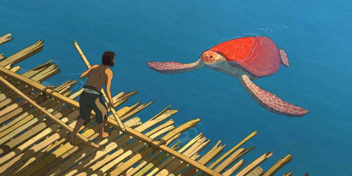

"The Red Turtle," directed by dutch animator Michael Dudok de Wit, was the talk of the animation community in 2016 when it was released. A large part of this was because of the involvement of Studio Ghibli as co-producer, specifically listing long-time producers Toshio Suzuki and Isao Takahata in the credits. Prior to this, Studio Ghibli had released "The Wind Rises" in 2013, meant to be the last film by world-renowed director Hayao Miyazaki, and the last film by the studio was "When Marnie Was There" in 2014 by up-and-coming director Hiromasa Yonebayashi. It was all but confirmed by 2016 that Studio Ghibli was winding down and would no longer make any more feature films. The involvement of Studio Ghibli was important in the reception of "The Red Turtle" as it overshadowed the film itself. When the film was eventually released on home video in America by Sony Pictures Classics, Ghibli's name is featured more prominently then director de Wit on the packaging, going so far as starting the synopsis on the back of the box with "Marking the much-anticipated return of Studio Ghibli..." (this is not the first or last time Sony Pictures Classics had failed to design packaging worthy or even acceptable to its animated releases, despite the disc itself to otherwise be satisfactory). It is true that Ghibli had an important role in the film being made: the story goes that Miyazaki himself initiated the prospect in co-funding a feature film by de Wit after referencing his respect for one of de Wit's short films. Indeed, de Wit had never made a feature film before this, only making his mark on the animation industry through award-winning short films. But it should be assumed that most of Ghibli's involvement was only in funding, marketing and distribution (albiet the only film Ghibli tied its name to outside of internal works), and that Ghibli shared the title of "producer" equally with groups including Wild Bunch, Lumiere, and Why Not Productions (among others), all primarily in France or Belgium. As such, it is a mistake to market "The Red Turtle" as a "Studio Ghibli" film. None of its animators were involved, and the animation, art style, design, framing, story, and pacing is completely different from anything Ghibli had released. Anyone entering this movie with wrong expectations will be disappointed. This film by Prima Linea Productions is, in fact, different from almost any other animated film you have seen, the closest comparison that comes to mind being Sylvain Chomet's "The Illusionist," but even that is a stretch. "The Red Turtle" is pure de Wit. The story is incredibly straight-forward at first. Without any dialogue (despite the Blu Ray humorously having subtitles and dubs in multiple languages, the only vocal sounds are a handful of cries from the sparse cast of characters), it shows a lone man barely surviving a storm at sea, being stranded onto a island in the middle of the sea. We don't know if this nameless man was originally on a boat, a ship, a plane, or other, and it doesn't matter. We see the man explore the island for food and shelter, discovering dense forests and plains surrounding a tall rock hill, the island bountiful to support survival but small enough to run across in minutes. We see the man use these resources to build a raft to attempt to leave the island, but each time, a unseen force destroys the raft from below, trapping the man to his fate alone.As the title would suggest, there is a red turtle involved in the story, but to say any more would spoil the experience. The story can be divided into three, maybe four, separate acts, the obvious plot point of "leaving the island" only making up the first act. I will say that the man never does leave the island. Through some unexpected magic, the film turns into a strange fable about life itself, encompassing love and loss, anger and regret, family and lonlieness, the energy of youth and peacefulness of growing old. It shows all of these things, some scenes being appropriately difficult to watch, some scenes being unexpectedly funny. The meaning of life itself seems to be shown on the screen, surrounded by nature in all its harshness and generousity. Again, all of this is shown clearly without a spoken word.And such a feast it is to behold. The character designs only involve a handful of moving characters, and they are drawn simply, but with unique designs that recall respected graphic novels from France and Belgium, a type of design not usually seen in film, but expressive all the same. In contrast, the backgrounds are lush with detail, making me wonder if simply drawing the trees and leaves took more time than animation. The animation is mostly grounded in reality, despite a handful of dream sequences that help convey what we are supposed to understand. But the animators do everything they can to challenge themselves in those simple movements: never have I seen character animation as... consistent? The porportions don't change, perspectives and scale is always correct. The animation team might be the most disciplined in the world, most certainly an A+ class in the most prestigous art school. The backgrounds, and a handful of other elements, are modeled with 3D and/or animated with computer-assisted means. Is it noticeable? Barely. Instead of relying on 3D animation to mimic and blend with 2D animation, the 2D elements blend with the 3D. I had assumed the film really was made with 3D animation until I saw it on a large theater screen, which is no small feat.  And if at all possible, do view this movie on the largest screen possible, or if really lucky (like I was), watch it in a empty theater on a rainy Saturday night. "The Red Turtle" is shot primarily with long shots and extreme long shots, such that many frames will have the lone man as a small spec taking up less than 5% of the screen in a corner, giving a greater sense of scope and emptyness while allowing one to enjoy the detailed environments. Not many films would dare be framed like that, and very few could justify why to do it. In "The Red Turtle," it makes sense. And even when viewing the lone man from a distance, you can make out the man's footsteps in the sand as tiny specs a few pixels wide on your 1080p screen. The overall attention to detail is magnificant, and is a perfect example of a film to justify the existance of 4K resolution and 60-plus inch televisions. The background music, when not silent, primarily relies on a single theme, but it is so beautiful and versitle I don't mind it playing on repeat during the film's more emotional moments.Notice I said I saw this alone in a empty move theater. It's true, "The Red Turtle" was playing not far from me in a indie theater for a week, and I bought a ticket eagerly and sat down alone in a room of a few hundred seats. Everything I've said so far about "The Red Turtle" has been praise, and it was hailed by critics as one of the best films of the year by most critics. But not everyone will enjoy watching a silent movie about a lone man on an island discovering the meaning of life. You really must be in the right state of mind to be able to pay attention to the movie without falling asleep. Even when I could appreciate everything and watched in earnest, I still felt a bit bored and curious what might be going on outside the theater. For a film that is only 80 minutes long, it isn't good to say that the story drags a little longer than it should. In this, I can compare again de Wit's style to Chomet, where I think both having issues with pacing in their storytelling that prevent their masterpieces from being appreciated by a much wider audience. There is a message in the movie, but as important as its themes are, they don't have the sense of urgency to warrant excitement around the story. That is, if you can properly identify those themes. Enough of "The Red Turtle" is abstract in its story-telling to make one question what exactly happened, and the greater overview can be interpreted in a wide variety of ways. Is this a film about acceptance of nature around you instead of fighting it? Is it about surviving the trials of life and making the best of every situation? Is it about how life will find a way and how nature personified will provide in unexpected ways? Is it all of these things? Or was much of the film a lucid dream of the lone man's subconcious wish while he dies of dehydration on a stranded beach? To the right audience, this type of story encourages rewatching to ponder these questions. To many, it can be frustrating and inaccessible. I would still recommend it to everyone, but I already know not everyone will have fun watching it, because having fun isn't really the point."The Red Turtle" was pushed hard to receive a nomination for the Academy Awards, but lost the win that year to Disney's "Zootopia." Even had there been no bias towards Hollywood merchandise-makers, the award might have been more likely to go to underdog "My Life fas a Zucchini" that year rather than "The Red Turtle." It's hard because there isn't a single moment I would cut out of "The Red Turtle." Every minute has purpose and weight in its beauty. The film can translate directly to a high-calibur graphic novel. But the overall impression is of watching a video piece in an art gallery... it is a modern masterpiece, it stirred something inside me that will remain for a long while, but I will probably watch some Disney cartoons tomorrow instead.
- "Ani" More reviews can be found at : https://2danicritic.github.io/ Previous review: review_The_Rabbi's_Cat Next review: review_The_Return_of_the_King